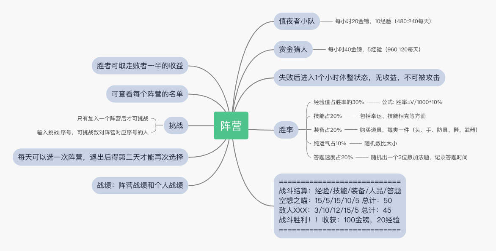

序列战争是一款《诡秘之主》世界背景的QQ群聊天游戏。目的是活跃群气氛，增加带入感。
它以机器人插件的方式运行在酷Q机器人平台上。
当QQ群内开启序列战争后，它会自动统计群内成员聊天的数量（大于4个字算1条，小于4个字不算），每发送1条消息，涨1点经验和1点金镑，并消耗1点灵性。
每日灵性耗尽后，不再增长经验与金镑。
除被动记录外，序列战争插件还可以主动触发，并使用一些功能。
比如转换职业途径，查询当前数据等。
指令触发分为群聊触发和私聊触发两种。
群聊触发方式为，在群内：@机器人 帮助 。注意，所有群里内的@必须为手动艾特，复制的信息无效。
私聊触发方式为，加机器人好友并私聊发送：序列战争 后，进行QQ群绑定后使用。私聊绑定后可发送关闭私聊来解除绑定或者发送@来更换绑定的QQ群。
使用帮助指令（按照上述方式触发）可得到基础菜单选项：
帮助: 回复 帮助 可显示帮助信息。
设置: 回复 设置 可查看插件高级设置。
资料: 回复 资料 可显示与人物信息相关的指令。
序列: 回复 序列 可显示与途径、序列相关的指令。
教会: 回复 教会 可显示与教会相关的指令。
商店: 回复 商店 可查看神秘黑市的商品清单。
生活: 回复 生活 可查看生活菜单。
支持私聊查询，私聊格式为’指令@群号‘或发送’序列战争‘绑定QQ群号，其余详细介绍请见：https://github.com/molin0000/secretMaster/blob/master/README.md`
备注：当机器人在QQ群内被禁言后，可以使用私聊指令游玩。
详细的指令列表和功能，将在下文中进行介绍。机器人大部分指令匹配方式为包含式匹配，只要包含关键字即可触发。
所有数据均为每个群独立。多个QQ群互不影响。
下载地址：
https://cqp.cc/t/46674
开源地址：
https://github.com/molin0000/secretMaster
副本编辑器地址：
https://mission-editor.now.sh/
下面对序列战争中的每一项功能进行详细介绍。
资料菜单内综合了所有人物的资料查询功能。
资料: 回复 资料 可显示与人物信息相关的指令。
属性: 回复 属性 可查询当前人物的属性信息。
尊名: 序列3以后可以自定义尊名显示，方法为 @机器人 尊名xxxxoooo。
道具: 回复 道具 可查看当前人物持有的道具。
技能: 回复 技能 可查看当前人物所有的技能。
排行: 回复 排行 可查询当前群内的非凡者排行榜。
查询: 回复 查询+排名 可查询排行榜上人物的属性信息。
神位: 回复 神位 可查询当前22条序列的神位信息。
私聊绑定后发送属性， 或者在群聊中@机器人 属性 可查询人物的属性卡。例如：
昵称：空想之喵
途径：魔女
序列：序列5：痛苦
勋章：🎖🎖
经验：3953
金镑：302
幸运：0
灵性：126
修炼时间：187小时
战力评价：出神入化
教会/组织：裁决圣殿
工作：值夜者小队
尊名：无
其中：昵称为QQ群内昵称。
途径为用户主动发送更换指令从22个途径中选取的途径。初始状态为普通人，更换后才会变化。
序列可看作用户的等级，最低是普通人，然后是序列9，8，7...最高是序列0。
需要注意的是，每个序列只能有1位序列0，当出现序列0后，序列2和1将不会再晋升。
序列不会自动增长，需要手动发送晋升指令进行晋升。
勋章奖励给对序列战争游戏有特殊贡献的人，特殊贡献包括但不限于：1）提交bug；2）编写副本；3）编写探险文案；4）提出有效建议并被采纳。
勋章只能作者颁发，在机器人全局有效，即每个群，只要是同一个机器人，都可看到勋章。
每一类型的贡献只可得1枚勋章。
经验为是否可以晋升的主要依据。机器人会自动统计群内成员聊天的数量（大于4个字算1条，小于4个字不算），每发送1条消息，涨1点经验和1点金镑，并消耗1点灵性。
幸运初始为0，会对探险的结果有一定影响，幸运5以上时，探险不会遇到负面结果。
幸运数值上限为20，如果超过了，请报bug。
幸运数值来自幸运光环技能加成。
灵性为每天可用的活力点数，灵性为空后，水群不再加经验和金镑。
灵性默认每天早上8点，发放200点。灵性协调技能可增加灵性上限。
修炼时间为机器人记录的从第一条有效消息至今的小时数。
战力评价是一个四字成语，源引自《英雄坛说》，经验每提高50点，战力评价上升一级。10000点经验时达到最高，之后，战力会显示转生+1，然后评价轮回。此后每超过1万点，转生+1.
教会、组织显示当前人物所加入的教会组织名称。
加入教会组织可享受改组织的技能加成。使用组织技能需要使用祈祷指令，每次祈祷可持续3天效果加成。
工作位置显示为在生活菜单内选择的工作内容。
尊名显示当前人物的尊名。当人物达到序列3后，可主动使用尊名指令设置尊名。
为防止恶意查询刷屏，在群内查询排行会花费3金镑
尊名显示当前人物的尊名。当人物达到序列3后，可主动使用尊名指令设置尊名。尊名设置时可支持换行，所以请自由设计尊名版式。
尊名可重复设置。
查看目前人物的道具栏内物品信息，物品可从商店购买。
当前版本，可以显示的道具包括灵性材料和至高权杖，物品数量可以堆叠，无上限。
灵性材料 x1;
可查看当前人物所有的技能。
目前技能包括3种：
幸运光环：增加人物的幸运值，降低探险遭遇的负面结果；5级时幸运+5
精力充沛：增加人物的每日可用探险次数；5级时探险次数+5
灵性协调：增加人物的灵性上限。5级时灵性+250
技能初次获得时为1级，每次人物序列晋升，所有技能自动升级。技能最高可达5级。
目前只有命运途径天生具备幸运光环技能。因为命运途径无法转换其它途径，技能是给他们的补偿。
其余技能可通过教会获得，教会的技能等级会随着教主的序列晋升而提升。
后续所有途径都会有自己的独有技能，请耐心等待。
使用排行命令可查询群内的经验排行，为防止恶意查询刷屏，在群内查询排行会花费10金镑。
排行会显示群内排名的前31名，低于31的不再显示。(别问我为什么是31~O(∩_∩)O~)
第1名：瓦尔基里的领导者，经验：16666
第2名：十年清纯无人问 一朝成屑天下知，经验：14024
第3名：序列0:毗卢遮那佛，经验：12096
第4名：不可调戏之魔女，经验：8839
第5名：团团——屑女人的患者，经验：8675
第6名：本人，经验：7274
第7名：序列∞ 有你的梦2，经验：6955
第8名：真实rap主---一团肉，经验：6937
第9名：汤姆先生，经验：6698
第10名：的滑稽天尊，经验：5526
第11名：？？？，经验：5524
第12名：祖国的食人花，经验：5468
第13名：xiao，经验：5348
第14名：醒着做梦，经验：5270
第15名：阿蒙，经验：5098
第16名：全场最帅的阿蒙（本体），经验：4310
第17名：自称文化人的夏喵，经验：4032
第18名：空想之喵，经验：3954
第19名：性欲全无罗塞尔，经验：3763
第20名：萌新，经验：3693
第21名：弗隆平，经验：3575
第22名：自给自足的 命运之蛇 威尔，经验：3486
第23名：㍿，经验：3458
第24名：打更人，经验：3288
第25名：亚当，经验：3134
第26名：格罗赛尔游记（开学勿踢），经验：3116
第27名：小丑，经验：3072
第28名：Jay Pentrist(杰伊·彭特里斯特)，经验：2844
第29名：随缘（阿三程序员），经验：2789
第30名：阿卡林人，经验：2641
第31名：我来到，我看见，我记录，经验：2589
在使用排行指令查询完排行之后，可使用查询指令查询排行榜上每个人的资料卡片。
输入查询+排行名词即可查询，例如：查询1
昵称：瓦尔基里的领导者
途径：愚者
序列：序列1：诡秘侍者
经验：16666
金镑：10070
幸运：4
灵性：0
修炼时间：187小时
战力评价：天人合一(转生+1)
教会/组织：瓦尔基里
工作：值夜者小队
尊名：
错乱无序的时空之主
缔造无尽奇迹的小丑
超越时间的疯徒
使用神位指令可查询22条途径神位（序列0）的占用情况。
因为每个途径只能有一个序列0，所以有远大理想的朋友，请先查询再选择自己的途径。
1 - 黑夜: 空
2 - 死神: 空
3 - 战神: 空
4 - 暗: 空
5 - 心灵: 空
6 - 风暴: 空
7 - 智慧: 空
8 - 太阳: 空
9 - 异种: 空
10 - 深渊: 空
11 - 秘密: 空
12 - 工匠: 空
13 - 愚者: 空
14 - 门: 空
15 - 时间: 空
16 - 大地: 空
17 - 月亮: 空
18 - 命运: 空
19 - 审判: 空
20 - 黑皇帝: 空
21 - 战争: 空
22 - 魔女: 空
使用序列指令可查看与序列相关的菜单功能。
序列: 回复 序列 可显示与途径、序列相关的指令。
途径: 回复 途径 可查询途径列表。
更换: 回复 更换+途径序号 可更改当前人物的非凡途径。
晋升: 回复 晋升 可尝试晋升下一序列。
自杀: 回复 自杀 可删除当前人物，重新开始。
使用途径指令，可查看22条可选择的途径名称。例如：
途径列表：
1: 黑夜
2: 死神
3: 战神
4: 暗
5: 心灵
6: 风暴
7: 智慧
8: 太阳
9: 异种
10: 深渊
11: 秘密
12: 工匠
13: 愚者
14: 门
15: 时间
16: 大地
17: 月亮
18: 命运
19: 审判
20: 黑皇帝
21: 战争
22: 魔女
使用更换指令，可从普通人更换到22条途径中的任意一条。
指令格式为:更换+途径编号， 如：更换22 可更换到魔女途径。
注意：普通人仅可更换1次途径，请慎重选择。当达到序列4后，方可再次更换途径，但只可以在相近途径进行更换。（为了贴合原著）
相近途径列表为：
var secretGroup = [...][]uint64{
{0, 1, 2},
{3, 4, 5, 6, 7},
{8, 9},
{10, 11},
{12, 13, 14},
{15, 16},
{17},
{18, 19},
{20, 21},
}
如上所示，0，1，2可互相更换，3，4，5，6，7可互相更换。将此数字+1后，对应途径序号。
当经验达到晋升标准时，可以使用晋升指令进行晋升。
晋升时会自动扣除金镑购买序列魔药。
如果经验不足、金镑不够，不会允许晋升。
晋升默认成功率20%，背包内有灵性材料后，晋升成功率为60%。
晋升需求经验公式为：E=100*2^n; 其中n取值范围0~9；（2^n的意思为2的n次方）
晋升魔药需求金镑公式为：M=200+300*n; 其中n取值范围0~9；
晋升失败后，除扣除魔药金镑外，还会扣除100点经验。
晋升如果成功，所有本人技能自动提升一级。
输入自杀指令，可主动删除当前人物。从零开始。
每天最多可自杀3次。
教会菜单包括内容如下：
教会: 回复 教会 可显示与教会相关的指令。
寻访: 回复 寻访 可查询当前已经创建的全部教会和隐秘组织。
创建: 拥有至高权杖和1000金镑可创建教会或隐秘组织，格式为：创建;组织名称;组织简介;技能名称;入会费
解散: 回复 解散;名称 可解散自己创建的教会或隐秘组织。
加入: 回复 加入+名称 可加入现有的教会或隐秘组织。
退出: 回复 退出+名称 可退出当前已经加入的组织。
祈祷: 回复 祈祷 可消耗1份灵性材料，得到3天的神灵庇护。(可使用教会技能，信徒每次祈祷为教主增加10点经验)
教会支持的技能包括：幸运光环，精力充沛，灵性协调。
使用寻访指令可查询当前已经创建的全部教会和隐秘组织。
其中入会费是新人入会时，交纳给教主的金镑数额。
注册资金是教会创建时，教主所拥有的金镑数额。
人数上限只与当前教主的金镑数额相关。人数上限=教主金镑/200；
教会等级=（教主金镑-注册资本）/ 10000;
教会等级越高，所拥有的附加技能就越多，目前最高3级。（因为我们只有3个技能）
教会成员可通过祈祷获得教会技能加成。
名称:瓦尔基里
介绍:超越时间线，去寻找SG线的存在
尊神/教主:瓦尔基里的领导者
技能:幸运光环 lv4;
入会费:200
人数:36/50
等级:1级
注册资本:16522金镑
名称:裁决圣殿
介绍:审判世间所有恶行！
尊神/教主:序列0:毗卢遮那佛
技能:幸运光环 lv3;
入会费:200
人数:17/33
等级:0级
注册资本:4153金镑
名称:深渊祭祀场
介绍:学习是痛苦的深渊，但这会给你力量
尊神/教主:？？？
技能:灵性协调 lv2;
入会费:200
人数:5/12
等级:0级
注册资本:1273金镑
名称:塔罗会
介绍:一个被迫戴上单片眼镜的愚者
尊神/教主:团团——屑女人的眷者
技能:灵性协调 lv2;
入会费:50
人数:9/2
等级:1级
注册资本:1916金镑
当满足如下条件时，可创建教会：
创建教会的指令格式为：创建;组织名称;组织简介;技能名称;入会费
其中技能名称只可选择1个：幸运光环、灵性协调、精力充沛。
其余技能在教会等级上升时，随机获得。
入会费为新人入会时扣除，转给教主的金额。
例如：
创建;喵喵会;只会卖萌的一群人;幸运光环;200
教主输入解散指令可以解散自己创建的教会。指令格式为：解散;教会名
例如：解散;喵喵会
解散后，自动清退全部人员。教主解散后，才可创建新的教会。
输入加入;教会名称可加入指定教会，当然需要金镑满足入会费需求。
输入退出可退出指定教会，当然入会费不会退还。
在你拥有灵性材料的前提下输入祈祷指令，可获得3天教会技能加成。
商店中包括了所有可以购买的物品。
商店: 回复 商店 可查看神秘黑市的商品清单。
探险卷轴: （100金镑）走内部渠道，可立即开始1次探险。
灵性药剂: （70金榜）不明物质酿造的灵性药剂，据说口感极差。
至高权杖: （1000金镑）这是成立非凡者组织或教会必不可少的证明物。
灵性材料: （50金榜）随机得到1份灵性材料，可用于发动非凡仪式。（私聊时请说灵性材料一份，别问我为什么，我不知道……）
红剧场门票: （200金镑100灵性）听说很多非凡者看完表演都升级了。
欢迎光临星火之潮贝克兰德分店，请在浏览商品时，戴好您的斗篷和面具（找到想要购买的商品后，只需要回复购买加商品名称即可，如：购买探险卷轴）
在当天探险次数用光后，可以购买探险卷轴，来进行更多的探险。
100金镑一次。
每天最多可以购买3次灵性药剂，消耗70金镑，增加30点灵性。
用于创建教会的必备物品。
可用于祈祷，增加晋升成功率。私聊时，请在灵性材料后面添加后缀，不然会被QQ屏蔽。如灵性材料一份
消耗99点灵性和200金镑，可增加120点经验。
生活菜单内包括可用的生活项目。
生活: 回复 生活 可查看生活菜单。
探险: 回复 探险 可主动触发每日3次的奇遇探险经历。
银行: 可将金镑存入获得利息收益。指令格式为：银行;存款;3500 银行;查账 银行;取款;3500
工作: 可选择一份工作获得稳定收益。回复工作查询可用工种。指令格式为：工作;女装直播 工作;停止（每日灵性-20，金镑+100）
钓鱼: 可在风暴之海进行垂钓。灵性-5。
许愿: 极小概率中奖。金镑-2，0.2%的几率赢得1000金镑。
副本: 可随机开启一个文字游戏副本，建议在私聊下进行。
竞赛: 你朋友请你替他去参加知识教会举办的有奖速算竞赛，他说考过了奖金全归你，考不过奖金归他。
紫包: 你现在可以给好友发金镑紫包了，格式为：紫包;金额;对方QQ号
触发随机的探险文案，得到不同的探险效果。
概率分布为：
使用银行指令可将身上的现金存入并获得利息。
指令格式为：银行;指令;金额，可用指令包括：
其中存款每次最低100金镑。
利息为日利3%，每次输入查账指令时，进行利息结算。
金镑存入银行后，不能直接花费，也不会被惩罚扣除。
选择一份工作后，可每日获得一定数量的收益。
指令分为：工作;工作内容 和 工作;停止。
工作奖励将会在工作停止时发放。
工作不满1天无奖励。
使用钓鱼指令可钓鱼并卖得金镑。
所有鱼中，美人鱼价格最高。
序列2以下时，遇到海怪扣100点经验。
序列2以上遇到海怪可得1000金镑。
钓鱼的概率和金镑收入如下所示：
// 后面2个数值分别是概率和价格
var fishList = []Fish{
{0, "咸鱼", 5, 0},
{1, "88888888假币", 5, 0},
{2, "鱼人", 5, 50},
{3, "小麦蘑菇", 5, 20},
{4, "牛奶蘑菇", 5, 30},
{5, "鱼肉蘑菇", 5, 35},
{6, "大青鱼", 5, 10},
{7, "狼鱼", 5, 10},
{8, "飞鱼", 5, 10},
{9, "弗兰克的牛奶鱼", 5, 50},
{10, "鲸鱼", 1, 100},
{11, "奥维尔大龙虾", 1, 100},
{12, "美人鱼", 1, 200},
{13, "奥布尼斯海怪", 1, 1000},
}
某种鱼的概率=单独概率/所有概率之和。
极小概率中奖。金镑-2，0.2%的几率赢得1000金镑。
使用副本指令可以进行随机副本闯关。每次执行副本消耗50点灵性。灵性低于50时不可执行。
可在github上下载我们的官方副本，或者使用副本编辑器自由编写副本。
文字游戏副本编辑器：https://mission-editor.now.sh
副本将会有剧情演绎，根据玩家的不同选择，会有不同的惩罚或者奖励。
使用副本列表指令可显示当前的全部副本：
0) 副本：你是主角？, 作者：混沌汤圆, 时间：2020-03-10T03:48:35.829Z
1) 副本：兴趣使然的祈祷, 作者：混沌汤圆, 时间：2020-03-10T02:24:44.342Z
2) 副本：十字路口的恶魔, 作者：混沌汤圆, 时间：2020-03-09T03:23:10.098Z
3) 副本：幻想笔记 5+4, 作者：裁决, 时间：2020-03-10T05:16:18.641Z
4) 副本：幻想笔记5+4, 作者：裁决, 时间：2020-03-09T02:58:01.535Z
5) 副本：幽灵帝国, 作者：混沌汤圆, 时间：2020-03-10T02:05:38.254Z
6) 副本：没落教会, 作者：雪球, 时间：2020-03-09T02:07:30.443Z
7) 副本：游玩, 作者：眦, 时间：2020-03-09T04:23:48.145Z
8) 副本：神之保姆, 作者：混沌汤圆, 时间：2020-03-10T02:56:43.830Z
9) 副本：简单怪兽, 作者：空想之喵, 时间：2020-03-06T14:48:29.080Z
10) 副本：红剧场奇遇, 作者：血脑, 时间：2020-03-07T10:38:10.708Z
11) 副本：贝克兰德的平静一天, 作者：竹子, 时间：2020-03-08T04:34:45.973Z
12) 副本：非凡聚會 · 極光會, 作者：永夜劇作家, 时间：2020-03-09T02:12:51.111Z
机器人管理员，需要把副本手动放到数据目录中，然后重新加载插件来刷新。
数据目录为：coolq/data/app/me.cqp.molin.secretMaster/mission
如果没有这个目录，请创建。
使用竞赛指令可以开启一场速算数学竞赛。消耗25点灵性，连赢3局可得150金镑。
你现在可以给好友发金镑紫包了，格式为：紫包;金额;对方QQ号
序列7以下不可发紫包，序列7以上有金额限制。单次最大金额=100*2^n，其中n值取0~9。
使用战场指令可现实战场菜单，与阵营对战相关的功能都在这里。
战场: 回复 战场 可查看战场对战相关的菜单。
阵营: 输入阵营可查看当前2个阵营的详细名单，当你选择了值夜者小队或者赏金猎人这两种工作时，你就已经选择了阵营。
挑战: 输入对方在阵营名单中的序号，即可开启挑战。你需要尽可能快的计算出弹道和施法时机。例如: 挑战;3
战绩: 可查询自己的战绩。
战场阵营对抗的基础规则如下图所示：

首先，你要通过生活菜单下的工作选项，选择值夜者小队或赏金猎人这两份工作之一来加入一个阵营。
只有这两种工作会参与阵营对抗，其余都是和平工作。
发送指令工作;值夜者小队或者工作;赏金猎人来选择一个阵营加入。
这两项工作的收益已经大大提高，正所谓高风险高收益。
值夜者小队每小时奖励：20金镑，10经验；
赏金猎人每小时奖励：40金镑；5经验；
当然，加入之前，你可以使用阵营指令，看看当前各个阵营的胜率和有哪些人。
使用阵营指令可查询当前的阵营情况。
可以查看到每个人的收益，挑战成功后，会得到对方的一半的收益。
==================
值夜者小队：(胜：12，负：8)
0) 空想之喵 (休整) 金镑1, 经验0
==================
赏金猎人：(胜：8，负：12)
0) 风筝 (正常) 金镑196, 经验98
1) 竹子 (正常) 金镑2, 经验1
==================
其中括号中标记正常的是可以挑战的成员。
标记休整的人，刚刚失败过，1小时内不能挑战别人，也不能被挑战。
休整状态的人，1小时内无法获得每小时的收益。
1小时后休整状态自动恢复成正常状态。
注意！为了防止有人反复横跳，一旦停止工作（退出阵营）必须第二天才能再次加入阵营。（自杀可以立刻切换，但你的号也没了）
挑战指令的用法是挑战;0，分号后面加序号。
这个序号是阵营查询到的，对方的序号。
挑战指令执行后，可查看到战斗结算：
============================
战斗结算：经验/技能/装备/人品/答题
空想之喵：0/0/0/8/12 总计：20
风筝：9/3/0/0/0 总计：12
战斗胜利！!收获：98金镑，49经验
============================
结算时的数值会分别考虑双方的各种指标。
其中人品是一个随机数，每次不同。
答题是你在竞赛时的答题速度，答题速度越快，数值越高。
装备可在商店中查询与购买。
技能可以是自身技能，也可以是教会技能。
经验的公式上面图里面有。
输入战绩可查询个人的战绩和当前收益情况。
宠物店: 回复 宠物店 可查看宠物相关的菜单，每个人只可驯养1位宠物伙伴。
宠物状态: 查询宠物状态、属性、技能等信息。
宠物改名: 可修改宠物昵称，为自己的宠物起一个响亮的名字吧！（每次100金镑）。格式为：宠物改名;新昵称
宠物货架: 每日上新的可直接购买的宠物列表在这里查看。
宠物领养: 在宠物货架上看到心仪的宠物后，可以申请领养。格式为：宠物领养;宠物名
灵界法阵: 借用店内的灵性法阵，你可以沟通灵界，召唤奇妙的灵界宠物。请提前准备好灵性材料，每次消耗100金镑，20灵性。
宠物晋级: 当你的宠物满足晋级标准时，你可以消耗经验和金镑为其晋级。
宠物放生: 释放你的宠物回归大自然，它会将私房钱送给你一半作为感谢。
宠物融合: 宠物和你融为一体，它将变成你的经验（吃掉了，20%转化率）。
宠物历练: 强大的宠物少不了探险的历练。宠物出门探险，当宠物生命降为1时进入濒死状态，只能等待召回，若3天不召回，则死亡。
宠物召回: 召唤你的宝贝宠物回家，以查看探险日志和收益。
宠物美妆: 增加宠物颜值，颜值越高被投喂的几率越大。(500金镑/次）
欢迎光临蘑菇屋宠物店~再这里你可以享受到贵宾级的服务。
使用设置指令可访问管理员的设置菜单。此菜单中的指令只有插件管理员可以使用。
设置: 回复 设置 可查看插件高级设置。
.supermaster: 设置机器人主人，全局，唯一，用法同.master。启动插件后请务必第一时间配置。
.master: 查看和设置管理员，设置本群的GM，格式为：.master;QQ号码，必须先设置管理员，才能使用其它设置指令, 查看指令.master。
序列战争开: 在本群开启序列战争插件。
序列战争关: 在本群关闭序列战争插件。
货币映射: 映射序列战争货币到其它插件ini文件，格式为：货币映射;ini路径;cQQ;关键字。
查看映射: 查看货币映射参数。
货币升级: 货币映射后，使用此命令使映射生效。
货币降级: 取消货币映射，还原为插件内部金镑使用。
GM: GM指令格式为：GM;exp;100;QQ号 目前支持exp,money,magic,god,luck数值支持加和减。
版本: 查询当前插件版本号。
silent: 设置当前QQ群的静默时间段，启用静默格式为: silent;on;20:00;21:00 或者关闭静默 silent;off
设置机器人主人，全局，唯一，用法同.master。
第一次启动插件后请务必第一时间配置。
格式为.supermaster;QQ号码。
supermaster为机器人唯一主人。具有颁发勋章🎖的权限。
使用.master指令设置插件管理员，此指令首次执行需要群管或群主权限，后续更改需要群主权限。
格式为.master;QQ号码，指定某QQ号码为本群的插件管理员。必须先设置管理员，才能使用其它设置指令。
单独使用指令.master 可查询当前插件管理员QQ号码。
此命令为分群开关，插件管理员可控制插件在某个群聊内是启用还是关闭。默认为开启状态。
此命令为分群开关，插件管理员可控制插件在某个群聊内是启用还是关闭。
使用货币映射，可以映射其它插件的ini格式数据文件。将序列战争的金镑绑定到外部ini文件数值上。
格式为：货币映射;ini路径;cQQ;关键字。
例如：货币映射;C:\coolq\xxx.ini;cQQ;金币。
映射后，其它插件ini文件数值变化时，序列战争人物的金镑也随之变化。
此指令可查询当前的映射参数是否正确。
只有主动调用货币升级指令后，映射的ini文件货币才生效。
此指令可解除外部金镑映射，继续使用内部独立的货币系统。
使用GM指令可对一些数值进行修改。可修改的数值包括：exp,money,magic,god,luck,bank （分别为经验、金钱、灵性、神位、幸运、存款天数）
格式为：GM;类型;数值;QQ号
例如：GM;money;2000;67939461 为给67939461加2000的金镑。
其中god设置为0，可清除神位信息。
way为设置途径，取值1~22.
level为设置序列等级，序列9-0分别对应level 0~9.
skill可为某个人提升全部技能等级。
bank可指定某个人的存款基准天数向前或向后便宜。例如GM;bank;-1;67939461
输入版本指令可查看当前的版本信息。
最新版插件会随时发布到github的release页面。
增加了分群内静默功能，可设定机器人开启的时间段。其余时间内，机器人不对指令做出回应，只默默记录群数据。
使用方法为：silent;on;开始时间;结束时间
这里的开始时间和结束时间是可以回复消息的时间段，时间格式为18:28，需要使用英文冒号。
关闭方法为：silent;off，关闭后，取消静默功能，可自由回复消息。
只输入silent可查询当前群内的静默状态。
如果你想为序列战争贡献文案、副本、或编程资源。请添加策划QQ群：1028799086
喜欢诡秘之主小说的可以来小说的QQ粉丝群:731419992，序列战争游玩群:1030551041,466238445
探险文案可以直接提交github的pull request在globalVar.go文件中修改。
副本可以加群后上传到群文件。
在使用插件游玩的时候，请注意不要扰乱群秩序，恶意水群。
后续会有新功能陆续推出，包括但不限于：1）阵营；2）战斗；3）交易；等。
更远的未来，可能会有基于RPGMaker软件开发的PC端游戏，或者基于Unity的横版过关游戏，敬请期待。
本游戏使用完全开源的GPL协议运行。可自由修改和引用。
如果你喜欢它，请用一点点的零花钱，为作者发电，用于作者支付服务器租金和QQ会员。谢谢！
发电地址：https://afdian.net/@molin
感谢策划群内提供文案和策划的伙伴们！！
他们是：
flak.
广元子
屑女人
小萌新
以及其它热心的群友...
同时感谢下列朋友的发电支持，撒花~~~~
爱发电用户_CUTc
？？？
爱发电用户_pjw7
李泽言正牌夫人。
阿兹克先生
景泽
爱发电用户_VyD5
何以梦离愁
随缘
爱发电用户_RW69
欲望母树
要恰年夜饭
阿兹克先生